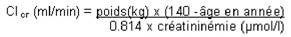

RÉSUMÉ DES CARACTÉRISTIQUES DU PRODUIT
ANSM - Mis à jour le : 11/07/2011
LEVOFLOXACINE MYLAN 5 mg/ml, solution pour perfusion
2. COMPOSITION QUALITATIVE ET QUANTITATIVE
Lévofloxacine hémihydrate ............................................................................................................... 5,12 mg
Quantité correspondant à lévofloxacine .............................................................................................. 5,00 mg
Pour 1 ml.
Excipient à effet notoire : sodium (3,54 mg/ml).
Pour la liste complète des excipients, voir rubrique 6.1.
Solution pour perfusion.
4.1. Indications thérapeutiques
Elles procèdent de l'activité antibactérienne et des caractéristiques pharmacocinétiques de la lévofloxacine. Elles tiennent compte à la fois des études cliniques auxquelles a donné lieu le médicament et de sa place dans l'éventail des produits antibactériens actuellement disponibles.
Elles sont limitées chez l'adulte aux traitements des infections bactériennes dues aux germes sensibles à la lévofloxacine telles que:
· pneumonies communautaires, bactériémiques ou non,
· prostatites,
· pyélonéphrites aiguës,
· infections biliaires.
Situations particulières
Traitement curatif de la maladie du charbon.
Il convient de tenir compte des recommandations officielles concernant l'utilisation appropriée des antibactériens.
4.2. Posologie et mode d'administration
La solution est administrée en perfusion intraveineuse une à deux fois par jour.
La posologie est fonction de l'indication, de la gravité et du siège de l'infection, de la sensibilité du germe en cause, et du poids du sujet.
En cas de traitement initial par la forme injectable, le relais par voie orale peut en général être pris après quelques jours, selon l'état du patient. Compte tenu de la bioéquivalence des formes orale et parentérale, la posologie reste la même (voir rubrique 5.2).
Posologie
Chez l'adulte à fonction rénale normale (clairance de la créatinine > 50 ml/min)
|
Indications thérapeutiques |
posologie quotidienne |
voie d'administrationI |
|
pneumonies communautaires |
1 à 2 x 500 mg/24 heures |
IV° |
|
prostatites |
1 x 500 mg/24 heures |
IV° |
|
pyélonéphrites aiguësi |
1 x 500 mg/24 heures |
IV° |
|
infections biliaires § |
1 x 500 mg/24 heures |
IV° |
°Traitement IV initial pouvant être relayé par un traitement oral, à la même posologie et selon la même fréquence d'administration quotidienne.
§En association à nitro-imidazolé en cas de suspicion d'infection mixte aérobie-anaérobie.
Situations particulières
Maladie du charbon: traitement curatif des personnes symptomatiques devant recevoir un traitement parentéral, avec relais par voie orale dès que l'état du patient le permet: 500 mg/jour en une perfusion suivis par voie orale par 500 mg/jour en une prise.
La durée du traitement est de 8 semaines.
Chez l'insuffisant rénal (clairance de la créatinine ≤50 ml/min)
|
Clairance de la créatinine |
Posologie: 1 x 500 mg/24h |
Posologie: 2 x 500 mg/24h |
|
|
dose initiale: 500 mg |
dose initiale: 500 mg |
|
50 - 20 ml/min |
puis: 250 mg/24 h |
puis: 250 mg/12 h |
|
19 - 10 ml/min |
puis: 125 mg/24 h |
puis: 125 mg/12 h |
|
< 10 ml/min (y compris hémodialyse et DPCA)* |
puis: 125 mg/24 h |
puis: 125 mg/24 h |
*Aucune dose supplémentaire n'est nécessaire après hémodialyse ou dialyse péritonéale continue ambulatoire (DPCA).
Chez l'insuffisant hépatique
Pas d'adaptation posologique.
Chez la personne âgée
Adaptation posologique selon la valeur de la clairance de la créatinine calculée à l'aide de la formule de Cockcroft à partir d'un poids récent du sujet:
Chez l'homme:

Chez la femme:
Clcr (ml/min) = 0.85 x clairance de la créatinine de l'homme.
Chez l'enfant
L'utilisation de la lévofloxacine chez les enfants et les adolescents en phase de croissance est contre-indiquée (voir rubrique 4.3).
Mode d'administration
La solution pour perfusion doit être exclusivement administrée en perfusion intraveineuse lente. La durée de la perfusion doit être d'au moins 60 minutes pour la présentation 500 mg/100 ml de lévofloxacine et d'au moins 30 minutes pour la présentation 250 mg/50 ml de lévofloxacine.
Ce médicament NE DOIT JAMAIS ETRE UTILISE en cas de:
· hypersensibilité à la lévofloxacine, ou à un produit de la famille des quinolones, ou à l'un des excipients,
· épilepsie,
· déficit en glucose-6-phosphate déshydrogénase (G6PD),
· antécédents de tendinopahies avec une fluoroquinolone (voir rubriques 4.4 et 4.8 ),
· enfant jusqu'à la fin de la période de croissance et adolescent, en raison de la toxicité articulaire démontrée chez l'animal (voir rubrique 5.3 ),
· allaitement (voir rubrique 4.6 ).
4.4. Mises en garde spéciales et précautions d'emploi
· Infections à Clostridium difficile
Comme avec d'autres antibactériens à large spectre, de rares cas de colite pseudo-membraneuse ont été signalées pendant ou après un traitement par lévofloxacine. Il convient alors d'arrêter le traitement par lévofloxacine si celui-ci est en cours, de mettre en route une antibiothérapie adaptée. Dans ce cas, l'utilisation d'inhibiteurs du péristaltisme est contre-indiquée (voir rubrique 4.8).
· Tendinites
Les tendinites intéressent plus particulièrement le tendon d'Achille et peuvent conduire à une rupture. Elles peuvent survenir dès les premières 48 heures de traitement et devenir bilatérales. Elles touchent préférentiellement les sujets à risque: sujets âgés de plus de 65 ans, sujets soumis à une corticothérapie (y compris inhalée). La présence de ces deux facteurs majore très nettement le risque de tendinite. Il est nécessaire d'adapter la dose quotidienne chez le sujet âgé en fonction de la clairance de la créatinine (voir rubrique 4.2).
L'apparition de signes de tendinite demande un arrêt du traitement, la mise au repos des deux tendons d'Achille par une contention appropriée ou des talonnettes et un avis en milieu spécialisé (voir rubriques 4.3 et 4.8).
· Myasthénie
La lévofloxacine doit être utilisée avec prudence chez les sujets atteints de myasthénie (voir rubrique 4.8).
· Sujets prédisposés aux convulsions
La lévofloxacine doit être utilisée avec prudence chez des sujets ayant des antécédents de convulsions ou des facteurs prédisposant à la survenue de convulsions (voir rubrique 4.5).
· Insuffisants rénaux
Du fait de l'excrétion essentiellement rénale de la lévofloxacine, une adaptation posologique est nécessaire chez les insuffisants rénaux (voir rubrique 4.2).
· Photosensibilisation
Eviter l'exposition au soleil ou aux rayonnements UV (lampe à bronzer, solarium,..) pendant la durée du traitement et pendant les 48 heures suivant l'arrêt de celui-ci en raison du risque de photosensibilisation (voir rubrique 4.8).
· Interférences avec les examens biologiques
La lévofloxacine peut inhiber la croissance de Mycobacterium tuberculosis, et ainsi faussement négativer le diagnostic bactériologique de tuberculose.
· Ce médicament contient du sodium. Ce médicament contient 3,54 mg de sodium par ml (177 mg de sodium par poche de 50 ml et 354 mg de sodium par poche de 100 ml). A prendre en compte chez les patients suivant un régime hyposodé strict.
4.5. Interactions avec d'autres médicaments et autres formes d'interactions
La lévofloxacine ne modifie pas la pharmacocinétique de la théophilline ni de la digoxine.
Associations à prendre en compte
+ Probénécide, Cimétidine
Diminution de la sécrétion tubulaire rénale de la lévofloxacine.
La co-administration avec la lévofloxacine ne doit pas avoir de conséquences chez le sujet aux fonctions rénales normales. Prendre en compte cette interaction lors d'une prescription chez le malade insuffisant rénal.
Problèmes particuliers du déséquilibre de l'INR
De nombreux cas d'augmentation de l'activité des anticoagulants oraux ont été rapportés chez des patients recevant des antibiotiques. Le contexte infectieux ou inflammatoire marqué, l'âge et l'état général du patient apparaissent comme des facteurs de risque. Dans ces circonstances, il apparaît difficile de faire la part entre la pathologie infectieuse et son traitement dans la survenue du déséquilibre de l'INR. Cependant, certaines classes d'antibiotiques sont davantage impliquées: il s'agit notamment des fluoroquinolones, des macrolides, des cyclines, du cotrimoxazole et de certaines céphalosporines.
Il est préférable, par mesure de précaution, de ne pas utiliser la lévofloxacine pendant la grossesse.
En effet, bien que les études effectuées chez l'animal n'aient pas mis en évidence d'effet tératogène, les données cliniques sont encore insuffisantes.
Des atteintes articulaires ont été décrites chez des enfants traités par des quinolones, mais à ce jour, aucun cas d'arthropathie secondaire à une exposition in utero n'est rapporté.
Les fluoroquinolones passent dans le lait maternel. En raison du risque d'atteinte articulaire chez l'enfant, l'allaitement est contre indiqué au cours d'un traitement par fluoroquinolone.
4.7. Effets sur l'aptitude à conduire des véhicules et à utiliser des machines
Certains effets indésirables peuvent diminuer la capacité de concentration et de réaction nécessaire à l'exécution de certaines tâches. Il convient d'avertir les conducteurs de véhicules et les utilisateurs de machines de ce risque potentiel (voir rubrique 4.8).
Les informations présentées ci-dessous proviennent des études cliniques réalisées chez plus de 5000 patients et des données de surveillance post-marketing.
Les fréquences sont définies comme suit:
Très fréquent: supérieur à 10 %.
Fréquent: 1 % à 10 %.
Occasionnel: 0.1 % à 1 %.
Rare: 0.01 % à 0.1 %.
Très rare: inférieur à 0.01 %.
Cas isolés
· Appareil digestif, métabolisme: fréquemment, nausées, diarrhée; occasionnellement, anorexie, vomissements, douleurs abdominales, dyspepsie; rarement, diarrhée sanglante, entérocolite, colite pseudo-membraneuse, (voir rubrique 4.4); très rarement, hypoglycémie en particulier chez le diabétique.
· Système nerveux: occasionnellement, céphalées, vertiges, somnolence, insomnie; rarement, paresthésies, tremblements, anxiété, agitation, confusion, convulsions; très rarement, hypoesthésie, troubles visuels et auditifs, troubles du goût et de l'odorat, hallucinations.
· Cardio-vasculaire: rarement, tachycardie, hypotension; très rarement, allongement de l'intervalle QT (voir rubrique 4.9).
· Appareil locomoteur: rarement arthralgies, myalgies, tendinites touchant principalement le tendon d'Achille, pouvant survenir dans les premières 48 heures de traitement et devenir bilatérales; très rarement, rupture tendineuse (voir rubriques 4.3 et 4.4), faiblesse musculaire qui peut revêtir une importance particulière chez les patients atteints de myasthénie (voir rubrique 4.4); cas isolés de rhabdomyolyse et de rupture musculaire.
· Manifestations cutanéo-muqueuses, anaphylactiques ou anaphylactoïdes, pouvant survenir lors de la première prise: occasionnellement, prurit, éruption cutanée; rarement, urticaire, bronchospasme/dyspnée; très rarement, photosensibilisation, œdème de Quincke, hypotension, choc de type anaphylactique; cas isolés d'éruptions bulleuses graves telles que syndrome de Stevens-Johnson, syndrome de Lyell ou erythème polymorphe.
· Foie: fréquemment, augmentation des enzymes hépatiques (ASAT, ALAT), occasionnellement, augmentation de la bilirubine; très rarement, hépatite.
· Rein: occasionnellement, augmentation de la créatininémie; très rarement, insuffisance rénale aiguë (néphrite interstitielle aiguë).
· Hématologie: occasionnellement, éosinophilie, leucopénie; rarement, neutropénie, thrombocytopénie; très rarement, agranulocytose; cas isolés d'anémie hémolytique, pancytopénie.
· Autres: occasionnellement, asthénie; très rarement, pneumopathie allergique.
Selon les études toxicologiques menées chez l'animal et les études de pharmacologie clinique réalisées à doses supra-thérapeutiques, les signes les plus importants attendus suite à un surdosage de lévofloxacine sont des troubles neurologiques tels que confusion, vertiges, troubles de la conscience et crises convulsives, une augmentation de l'intervalle QT ainsi que des troubles digestifs tels que nausées et érosion des muqueuses.
En cas de surdosage, un traitement symptomatique doit être mis en œuvre. Une surveillance électrocardiographique doit être effectuée en raison de possibles allongements de l'intervalle QT.
L'hémodialyse, incluant la dialyse péritonéale et la dialyse péritonéale continue ambulatoire, n'est pas efficace pour éliminer la lévofloxacine. Il n'existe pas d'antidote spécifique.
5. PROPRIETES PHARMACOLOGIQUES
5.1. Propriétés pharmacodynamiques
ANTIBIOTIQUE ANTIBACTERIEN DE LA FAMILLE DES QUINOLONES GROUPE FLUOROQUINOLONES.
(Code ATC: J01MA12).
La lévofloxacine est un antibiotique de synthèse à large spectre, appartenant au groupe des fluoroquinolones.
La lévofloxacine est l'énantiomère S (-) (forme lévogyre) du racémique ofloxacine.
Mode d'action
Comme les autres antibiotiques de la famille des fluoroquinolones, la lévofloxacine agit sur le complexe ADN-ADN-gyrase et sur la topoisomérase IV.
SPECTRE D'ACTIVITE ANTIBACTERIENNE
Les concentrations critiques provisoires sont proposées ci-dessous. Elles séparent les souches sensibles des souches de sensibilité intermédiaire, et ces dernières, des résistantes :
S £ 1 mg/l et R > 2 mg/l pour toutes les bactéries,
excepté pour le pneumocoque dont les concentrations sont : S £ 2 mg/l et R> 2 mg/l.
La prévalence de la résistance acquise peut varier en fonction de la géographie et du temps pour certaines espèces. Il est donc utile de disposer d'informations sur la prévalence de la résistance locale, surtout pour le traitement d'infections sévères. Ces données ne peuvent apporter qu'une orientation sur les probabilités de la sensibilité d'une souche bactérienne à cet antibiotique.
Lorsque la variabilité de la prévalence de la résistance en France est connue pour une espèce bactérienne, elle est indiquée dans le tableau ci-dessous :
|
Catégories |
Fréquence de résistance acquise en France (> 10%) (valeurs extrêmes) |
|
ESPÈCES SENSIBLES |
|
|
Aérobies à Gram positif |
|
|
Bacillus anthracis** |
|
|
Staphylococcus aureus méti-S* |
|
|
Staphylococcus coagulase négative méti-S |
|
|
Staphylococcus saprophyticus |
|
|
Streptococcus |
|
|
Streptococcus pneumoniae péni- S/I/R* |
|
|
Aérobies à Gram négatif |
|
|
Acinetobacter baumannii |
50 - 75 % |
|
Branhamella catarrhalis* |
|
|
Citrobacter freundii* |
15 - 20 % |
|
Enterobacter cloacae* |
10 - 20 % |
|
Escherichia coli* |
5 -15 % |
|
Haemophilus influenzae* |
|
|
Haemophilus para- influenzae* |
|
|
Klebsiella oxytoca |
3 - 15 % |
|
Klebsiella pneumoniae* |
10 - 15 % |
|
Morganella morganii* |
|
|
Proteus mirabilis* |
|
|
Proteus vulgaris |
|
|
Pseudomonas aeruginosa* |
20 - 50% |
|
Salmonella* |
|
|
Serratia marcescens |
|
|
Shigella* |
|
|
Catégories |
Fréquence de résistance acquise en France (> 10%) (valeurs extrêmes) |
|
Anaérobies |
|
|
Fusobacterium |
|
|
Peptostreptococcus |
10 % |
|
Propionibacterium |
|
|
Autres micro-organismes |
|
|
Chlamydia pneumoniae* |
|
|
Chlamydia psittaci |
|
|
Chlamydia trachomatis |
|
|
Legionella pneumophila* |
|
|
Mycoplasma hominis |
|
|
Mycoplasma pneumoniae* |
|
|
Ureaplasma urealyticum |
|
|
ESPÈCES MODÉRÉMENT SENSIBLES |
|
|
(in vitro de sensibilité intermédiaire) |
|
|
Aérobies à Gram positif |
|
|
Enterococcus faecalis |
0 - 30 % |
|
Anaérobies |
|
|
Bacteroides fragilis |
20 % |
|
Prevotella |
|
|
ESPÈCES RÉSISTANTES |
|
|
Aérobies à Gram positif |
|
|
Enterococcus faecium |
|
|
Staphylococcus aureus méti-R |
|
|
Staphylococcus coagulase négative méti-R |
|
* Efficacité clinique démontrée pour les souches sensibles dans les indications cliniques approuvées.
** Bacillus anthracis : une étude animale d’infection expérimentale dans la maladie du charbon effectuée par inhalation de spores de Bacillus anthracis chez la souris, a montré une efficacité de la lévofloxacine administrée en prophylaxie post-exposition.
Résistance croisée
Il existe une résistance croisée in vitro entre la lévofloxacine et les autres fluoroquinolones. Etant donné le mécanisme d'action, il n'existe pas en général de résistance croisée entre la lévofloxacine et les autres classes d'anti-bactériens.
5.2. Propriétés pharmacocinétiques
Sujets aux fonctions rénales normales
Absorption
La cinétique est linéaire.
La biodisponibilité orale est voisine de 100 % permettant de prendre le relais de la voie intra-veineuse à posologie identique.
Après administration IV de 500 mg x 1/jour, les pics plasmatiques moyens à J1 et à l'état d'équilibre sont respectivement de 6,3 mg/L et 6,4 mg/L.
Après administration IV de 500 mg x 2/jour, les pics plasmatiques moyens à J1 et à l'état d'équilibre sont respectivement de 6,9 mg/L et 7,9 mg/L.
L'état d'équilibre est obtenu dans les 48 heures. Après administration IV de 500 mg x 1/jour et 500 mg x 2/jour, les concentrations minimales sont respectivement de 0,53 mg/L et 2,22 mg/L à l'état d'équilibre.
Distribution
Plasmatique
Le taux de liaison aux protéines plasmatiques est de 30 à 40 % pour la lévofloxacine.
L'administration répétée de 500 mg une fois par jour entraîne une très faible accumulation plasmatique du produit. Pour des doses supérieures à 500 mg deux fois par jour, il existe une accumulation faible mais prévisible.
Pénétration dans les tissus et les liquides de l'organisme:
· énétration dans la muqueuse bronchique, le film épithélial alvéolaire
Après administration de 500 mg per os, la lévofloxacine pénètre rapidement dans la muqueuse bronchique et le film épithélial alvéolaire avec respectivement des concentrations maximales de 8.3 microgrammes/g et 10.8 microgrammes/g et des rapports de pénétration muqueuse bronchique/sérum et film épithélial alvéolaire /sérum respectivement de 0.9 à 1.8 et de 0.8 à 3.
· Pénétration dans le parenchyme pulmonaire
La lévofloxacine pénètre rapidement dans le parenchyme pulmonaire. Après administration de 500 mg per os, les concentrations maximales sont de 11.3 microgrammes/g et sont atteintes entre 4 et 6 heures, avec des rapports poumons/plasma allant de 2 à 5. Les concentrations pulmonaires sont constamment supérieures aux concentrations plasmatiques.
· Pénétration dans le liquide interstitiel
La lévofloxacine pénètre rapidement dans le liquide interstitiel. Les concentrations maximales obtenues 2 à 4 heures après l'administration pendant 3 jours de 500 mg une à deux fois par jour sont respectivement de 4.0 microgrammes/ml et de 6.7 microgrammes/ml avec un rapport liquide interstitiel/plasma d'environ 1.
· Pénétration dans la bile et la paroi vésiculaire
La lévofloxacine pénètre rapidement dans la bile et la paroi vésiculaire. Après administration de 500 mg/j de lévofloxacine (IV/per os), les concentrations moyennes mesurées sont respectivement, dans la bile et la paroi vésiculaire, de 9.68 ± 13.97 mg/L et 6.05 ± 3.56 mg/L entre 0 et 3 heures, de 4.40 ± 2.62 mg/L et 1.84 ± 0.65 mg/L entre 6 et 12 heures, de 2.88 ±1.29 et 1.73 ±1.44 mg/L entre 13 et 18 h, et enfin de 8.70 ±12.26 et 0.86 ±0.44 mg/L entre 19 et 24 h.
Le degré d'obstruction biliaire explique la variabilité des concentrations biliaires observées.
· Pénétration dans le tissu hépatique
· Après administration de 500 mg de lévofloxacine par voie intraveineuse en dose unique, les concentrations moyennes observées dans le tissu hépatique 1h30 après injection sont de 18.0 ± 5.4 microgrammes/g.
· Pénétration dans le tissu prostatique
Après administration de 500 mg une fois par jour pendant 3 jours, les moyennes des concentrations obtenues 2 heures, 6 heures et 24 heures après la prise sont respectivement de 8,7±4,3 microgrammes/g, 8,2±3,4 microgrammes/g et 2,0±1,6 microgrammes/g avec un rapport prostate/plasma de 1,84.
· Concentration dans les urines
Après administration de 500 mg de lévofloxacine per os en une prise unique, les concentrations urinaires moyennes obtenues de 0 à 4 heures, de 4 à 8 heures et de 8 à 12 heures, de 12 à 24 heures sont respectivement de 237 ± 111 mg/L, 289 ±167 mg/L, 200 ±156 mg/L et de 108 ±52 mg/L.
Métabolisme
La lévofloxacine est très peu métabolisée, ses métabolites étant la déméthyl-lévofloxacine et la lévofloxacine N-oxyde. Ces métabolites représentent moins de 5 % de la dose excrétée dans l'urine. La lévofloxacine est stéréochimiquement stable et ne subit pas d'inversion chirale.
Elimination
Après administration orale et intraveineuse, la demi-vie d'élimination de la lévofloxacine est de 6 à 8 heures environ. Son excrétion est essentiellement rénale avec 85 % de la dose administrée retrouvée dans les urines et 12.8 % dans les fécès.
Il n'existe pas de différences majeures entre la pharmacocinétique de la lévofloxacine après administration intraveineuse ou orale.
Insuffisants rénaux
L'insuffisance rénale modifie la pharmacocinétique de la lévofloxacine. Lorsque la fonction rénale diminue, l'élimination et la clairance rénale (Clr) de la lévofloxacine diminuent et les demi-vies apparentes d'élimination augmentent.
|
Clcr (ml/min) |
< 20 |
20 - 40 |
50 - 80 |
|
Clr (ml/min) |
13 |
26 |
57 |
|
t 1/2 (heure) |
35 |
27 |
9 |
Sujets âgés
Il n'existe pas de différence majeure entre la cinétique de la lévofloxacine chez le sujet jeune et chez le sujet âgé, à l'exception des différences liées à la clairance de la créatinine.
5.3. Données de sécurité préclinique
Les doses létales 50 (DL50) observées chez la souris et le rat après administration orale de lévofloxacine se situent entre 1500 et 2000 mg/kg.
L'administration de 500 mg/kg par voie orale chez le singe a induit très peu d'effets, en dehors de vomissements.
Toxicité chronique
Des études de un et six mois ont été réalisées par gavage chez le rat et le singe. Les «doses sans effets toxiques», observées dans les études de six mois, sont respectivement chez le rat et le singe de 20 et 62.5 mg/kg/jour.
Effets sur la reproduction
Administrée durant la phase sensible de l'embryogénèse, la lévofloxacine administrée chez le rat par voie orale à la dose de 810 mg/kg/jour ou par voie IV de 160 mg/kg/jour n'a provoqué aucun effet tératogène visible. De même, aucun effet malformatif n'a été rapporté chez le lapin après administration par voie orale de 50 mg/kg/jour ou par voie IV de 25 mg/kg/jour.
Aucun effet sur la fertilité et la reproduction n'a été observé chez le rat après administration avant fécondation de 360 mg/kg/jour par voie orale ou 100 mg/kg/jour par voie IV.
Génotoxicité
In vitro, la lévofloxacine n'a pas manifesté d'effet mutagène sur des cellules procaryotes ou eucaryotes. Par contre, elle a induit des aberrations chromosomiques en l'absence d'activation métabolique, à partir de la concentration de 100 microgrammes/ml, chez des cellules pulmonaires de hamster chinois.
Les essais in vivo (micronucleus, échange de chromatides sœurs, synthèse non programmée d'ADN, dominant létal) n'ont mis en évidence aucun pouvoir génotoxique.
Phototoxicité - Photomutagénèse
Des études sur la souris ont montré une activité phototoxique seulement avec des doses très élevées de lévofloxacine administrée par voies orale ou intraveineuse.
Dans un essai de photomutagénicité, la lévofloxacine n'a montré aucun pouvoir génotoxique.
Pouvoir carcinogène - Photocarcinogénèse
Aucune potentialité carcinogène n'a été rapportée chez le rat après administration orale (produit mélangé à la nourriture) d'une dose de 100 mg/kg/jour.
Aucun pouvoir photocarcinogène n'a été observé lors d'un essai chez la souris.
Toxicité articulaire
Comme avec la plupart des fluoroquinolones, des atteintes du cartilage articulaire ont été signalées chez le rat et le chien, particulièrement chez de jeunes animaux.
Chlorure de sodium, acide chlorhydrique, hydroxyde de sodium, eau pour préparations injectables.
Ne pas mélanger avec l'héparine ou les solutions alcalines.
Après ouverture : la stabilité physico-chimique du produit a été démontrée pendant 4 heures à 25°C exposé à la lumière.
D'un point de vue microbiologique, le produit doit être utilisé immédiatement. En cas d'utilisation non immédiate, les durées et conditions de conservation après reconstitution et avant utilisation relèvent de la seule responsabilité de l'utilisateur.
6.4. Précautions particulières de conservation
Avant ouverture : A conserver à l'abri de la lumière dans son emballage d'origine.
Pour les conditions de conservation après ouverture, voir rubrique 6.3.
6.5. Nature et contenu de l'emballage extérieur
50 ml en poche polyoléfine suremballée et protégée par un étui opaque. Boîte de 1, 5, 10, 15, 20, 30 ou 50.
100 ml en poche polyoléfine suremballée et protégée par un étui opaque. Boîte de 1, 5, 10, 15, 20, 30 ou 50.
6.6. Précautions particulières d’élimination et de manipulation
Cette solution est compatible avec les solutions injectables suivantes:
· solution de chlorure de sodium à 0,9 %;
· solution glucosée à 5 %;
· solution de Ringer Lactate.
7. TITULAIRE DE L’AUTORISATION DE MISE SUR LE MARCHE
MYLAN S.A.S.
117 ALLEE DES PARCS
69800 SAINT-PRIEST
8. NUMERO(S) D’AUTORISATION DE MISE SUR LE MARCHE
· 575 646-4 ou 34009 575 646 4 3: 50 ml en poche. Boîte de 1.
· 575 647-0 ou 34009 575 647 0 4: 50 ml en poche. Boîte de 5.
· 575 648-7 ou 34009 575 648 7 2: 50 ml en poche. Boîte de 10.
· 575 649-3 ou 34009 575 649 3 3: 50 ml en poche. Boîte de 15.
· 575 650-1 ou 34009 575 650 1 5: 50 ml en poche. Boîte de 20.
· 575 651-8 ou 34009 575 651 8 3: 50 ml en poche. Boîte de 30.
· 575 652-4 ou 34009 575 652 4 4: 50 ml en poche. Boîte de 50.
· 575 653-0 ou 34009 575 653 0 5: 100 ml en poche. Boîte de 1.
· 575 654-7 ou 34009 575 654 7 3: 100 ml en poche. Boîte de 5.
· 575 655-3 ou 34009 575 655 3 4: 100 ml en poche. Boîte de 10.
· 575 657-6 ou 34009 575 657 6 3: 100 ml en poche. Boîte de 15.
· 575 658-2 ou 34009 575 658 2 4: 100 ml en poche. Boîte de 20.
· 575 659-9 ou 34009 575 659 9 2: 100 ml en poche. Boîte de 30.
· 575 660-7 ou 34009 575 660 7 4: 100 ml en poche. Boîte de 50.
9. DATE DE PREMIERE AUTORISATION/DE RENOUVELLEMENT DE L’AUTORISATION
[à compléter par le titulaire]
10. DATE DE MISE A JOUR DU TEXTE
[à compléter par le titulaire]
Sans objet.
12. INSTRUCTIONS POUR LA PREPARATION DES RADIOPHARMACEUTIQUES
Sans objet.
Liste I.
Réservé à l'usage hospitalier.